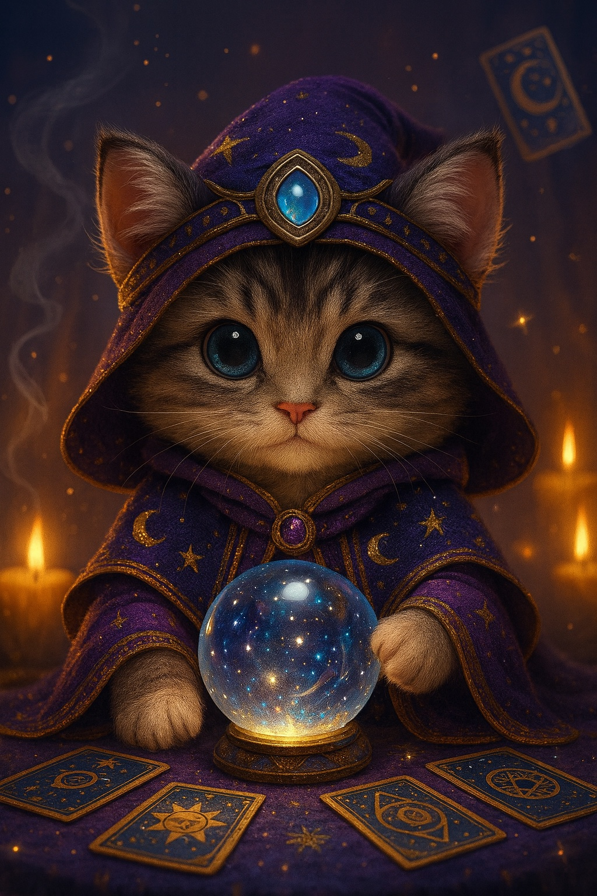
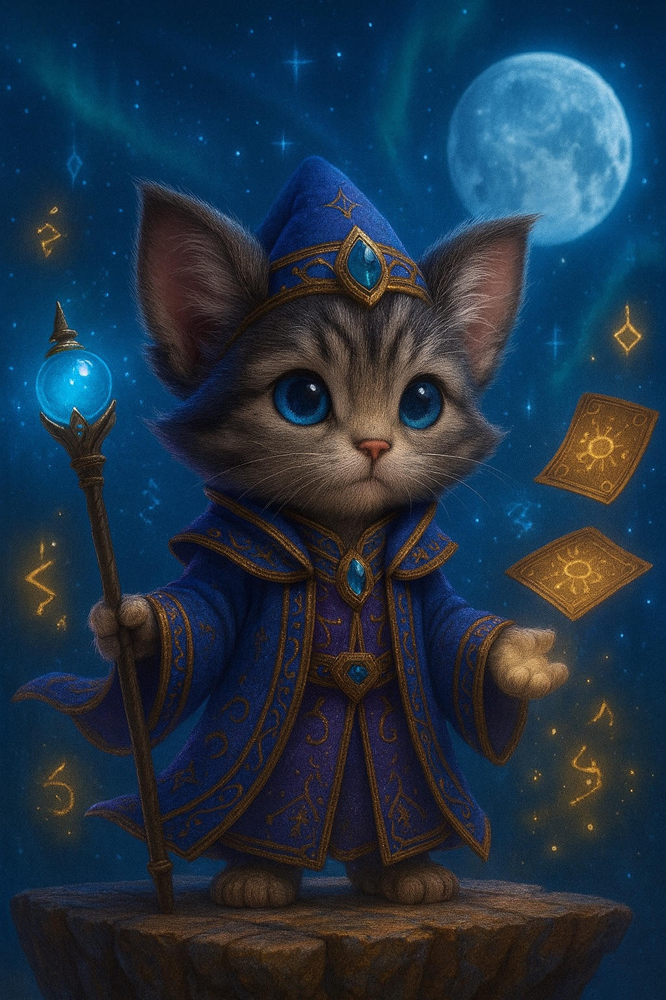

今日の一言—
NINE STAR KI × 60 CLASSIFICATIONS
あなたの星を知って、毎日をもっと幸運に。
生まれもった魅力も、
迷っている今も、
あなたらしく運を開くヒントをお届けします
生年月日から、
あなたの魅力と今日の開運ヒントを。
毎日の占いは、何度でも無料です。
DAILY FORTUNE
ルナの毎日占い
生年月日から、
今日のあなたにぴったりな
開運ヒントをお届けします。
TODAY'S LUCKY GUIDE
今日のあなたの開運ヒント
ラッキーカラー—
パワーフード—
今日やってみたい開運アクション—
ラッキーナンバー—
TWO SIDES OF LUNA
ルナが、あなたを導きます
自分を深く知ることから、
運を味方につける行動まで。

01
あなた自身を読み解く
水晶玉のルナ
生年月日から、
本命星・月命星・傾斜・60分類干支を組み合わせ、あなたの本質や魅力を丁寧に読み解きます。
- 生まれ持った性格と本質
- あなたの長所と魅力
- 人間関係の傾向と注意点

02
これからの一歩を照らす
杖のルナ
今のあなたに必要な運の生かし方を、
仕事・お金・恋愛・方位など、身近なテーマから、これからの一歩を、やさしく照らします。
- 毎日できる開運アクション
- 運気を生かすタイミング
- 迷ったときの進み方
READING MENU
ルナに相談できること
気になるテーマから、
今のあなたに必要なヒントを見つけてください。
LUNA'S FIRST READING
生年月日からわかる
生年月日からわかる
無料の基本鑑定
本命星・月命星・傾斜・干支から、
ルナがあなたの魅力を読み解きます。
あなたの生まれ持った星
ルナの鑑定に進みますか？
あなたの星を重ねて、本質と魅力をお伝えします。
ルナの鑑定が始まりました
水晶玉に、あなたの星の輝きが映し出されています…
あなたらしさは、幸運をひらくいちばん大切な力です。今日からその魅力を、少しずつ輝かせていきましょう。
A MESSAGE FROM KENKEN
占いは、幸せにつながる扉を開いて、自分らしく前へ進むために。
九星氣學は、生まれ持った性質や運気の流れを知り、毎日の選択に生かすための知恵です。
開運氣學師ケンケン
ケンケンとルナについて
開運氣學師ケンケンが大切にしているのは、自分の魅力に気づき、前向きな一歩につながる鑑定。ルナは、その想いを届ける猫の案内役です。
九星氣學と60分類干支をもとに、あなたらしさを知るヒントと、日々取り入れやすい開運のアイデアをお届けします。
QUESTIONS
よくあるご質問
はじめての方も、安心してお楽しみください。
無料でどこまで占えますか？
毎日の占いでは、ラッキーカラー・パワーフード・開運アクション・ラッキーナンバー・今日の一言をご覧いただけます。
基本鑑定では、本命星・月命星・傾斜・干支と、あなたの本質や魅力をお伝えします。
どちらも何度でも無料にてお楽しみいただけます。
生年月日はどこに保存されますか？
生年月日は、お使いの端末のブラウザー内に保存されます。占いのためにサーバーへ送信することはありません。別の端末やブラウザーでは再入力が必要です。共有の端末では、入力した情報が次の利用者に表示される場合があります。
本命星・月命星・傾斜とは何ですか？
本命星は生まれた年から読み解く基本的な性質、月命星は生まれた月から読み解く内面の性質、傾斜は本命星と月命星の組み合わせから読み解く心の傾向です。ひとつの星だけで決めつけず、それぞれを重ねてあなたの魅力を見つめます。
相性鑑定や吉方位も利用できますか？
現在はテーマのご案内をご覧いただけます。ふたりの生年月日を使う相性鑑定、年運の個別鑑定、移動先や時期を使う吉方位の計算は、無料基本鑑定には含まれていません。
あなたの中には、まだ知らない素敵な星があります。
ルナと一緒に、その輝きを見つけていきましょう。
トップへ戻る